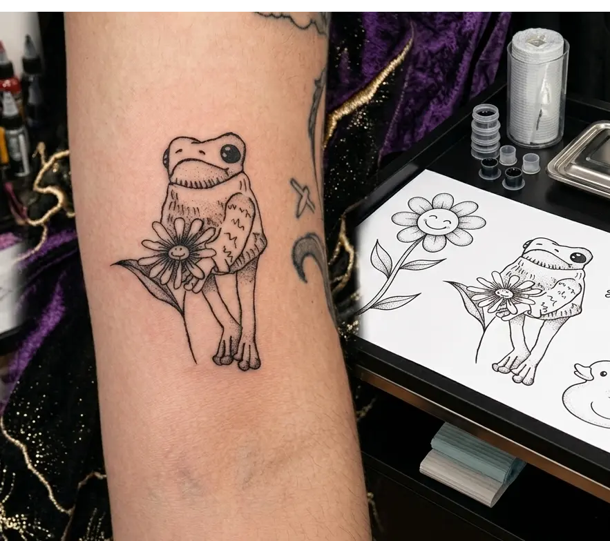
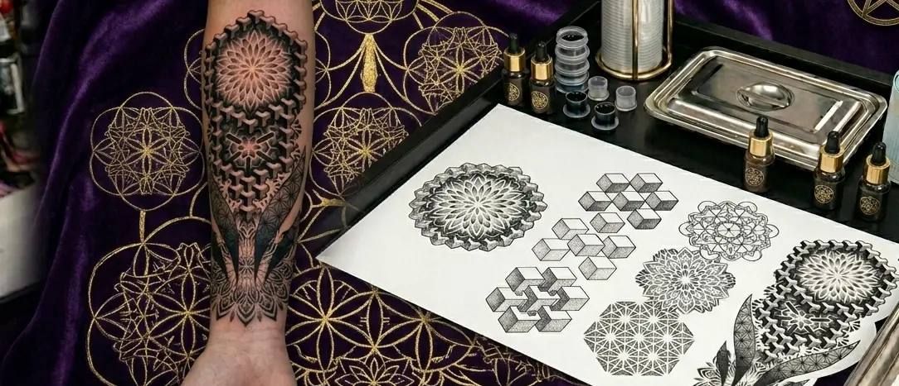
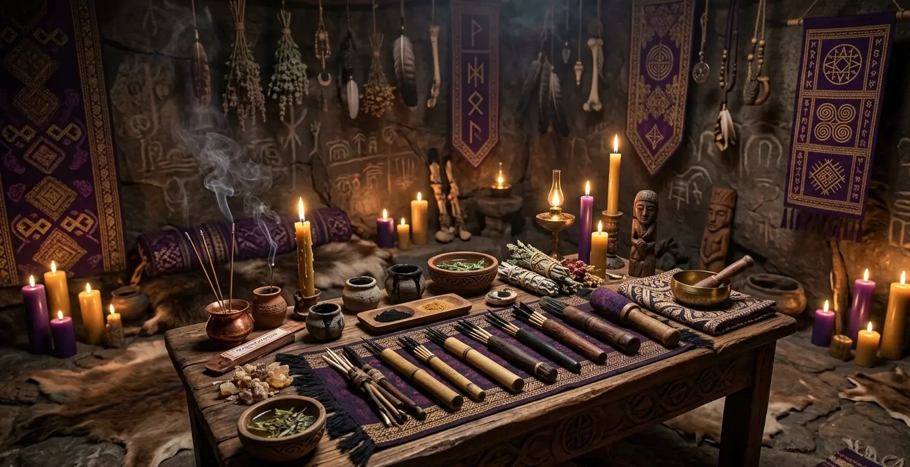

A Beleza de Tatuar Porque Sim
Explorando o valor intrínseco da ornamentação e a filosofia por trás da tatuagem puramente estética.
Ler artigo"A pele é o pergaminho. A agulha, a pena. Adentre nosso diário de estudos sobre a arte, a ciência e o rito da tatuagem. Uma jornada onde a materialização estética encontra a fundamentação dermatológica e o cerimonial ancestral."
Registros, reflexões e estudos sobre a arte de marcar a pele.
Colorimetria, estética e o comportamento da tinta

Explorando o valor intrínseco da ornamentação e a filosofia por trás da tatuagem puramente estética.
Ler artigoA história, o simbolismo e a técnica por trás das grandes peças da tatuagem tradicional japonesa.
Ler artigoSegredos do contraste e pigmentação para garantir cores vivas e duradouras em peles ricas em melanina.
Ler artigoA ancestralidade e o impacto espiritual da marcação no corpo

A matemática divina na pele: como formas geométricas criam portais de energia e harmonia visual.
Ler artigo
Mais do que estética, uma consagração. Como ritos de intenção e resiliência se encontram na agulha.
Ler artigoO processo físico e metafísico de regeneração: quando o corpo aceita a nova marca e encerra o rito.
Ler artigo